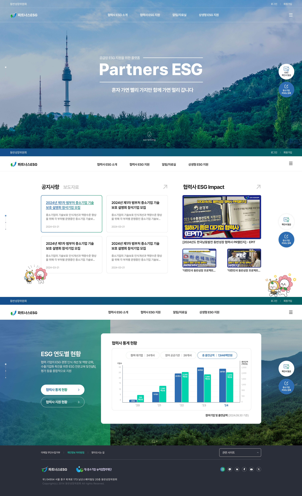
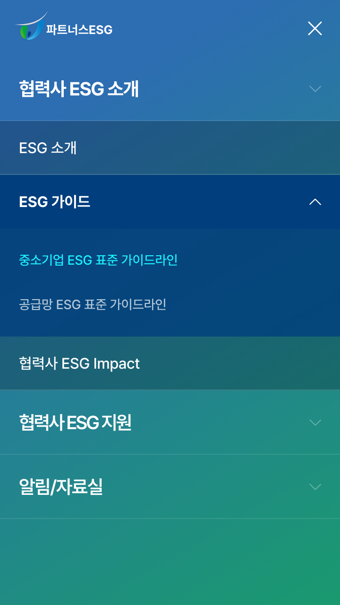
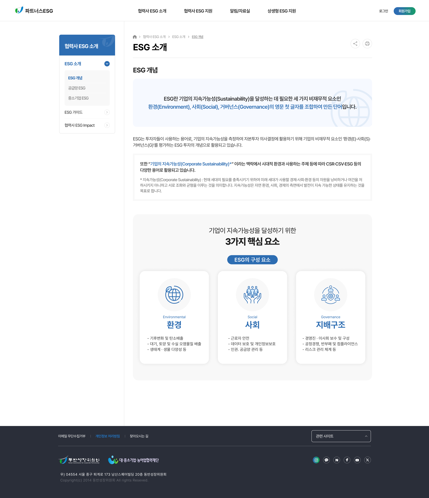
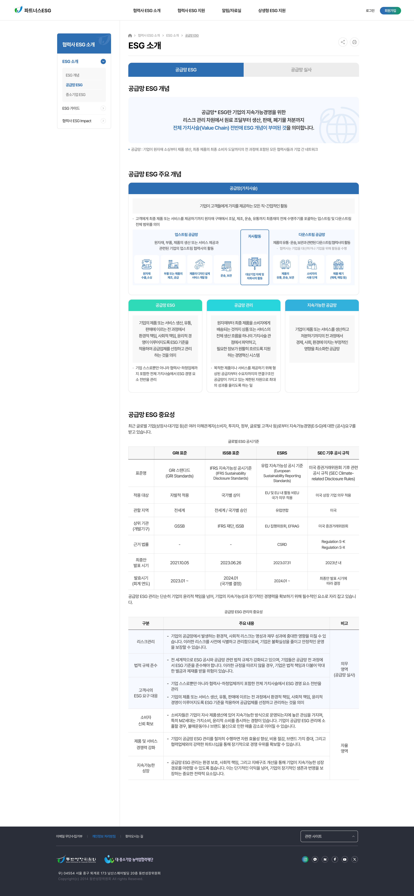
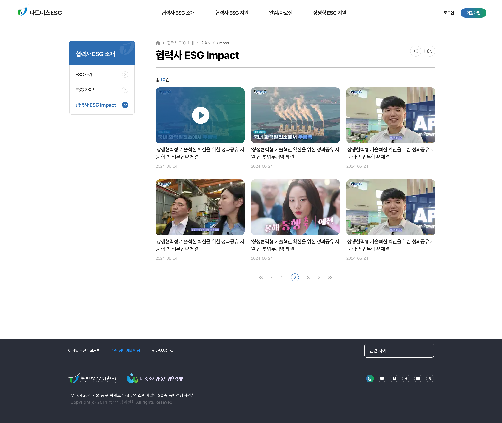

AS-IS
정체성이 묻힘
모기관 톤에 묻혀 ESG 사업의 시각 정체성이 드러나지 않음
공통 상속 +
ESG 전용 톤
GNB·푸터·뉴스 카드는 그대로 상속해 운영 효율을 확보하고, 컬러·아이콘·일러스트만 분리. #2D6DB2 · #11AE4F 듀얼 메인 컬러로 ESG 정체성을 분리했습니다.
모기관과의 분리, 그리고 연결
모기관 채널의 한 메뉴로 다뤄지던 ESG 사업을 독립 채널로 분리하면서, 공통 자산(헤더·로그인 등)은 모기관과 그대로 공유하도록 설계한 패밀리 사이트입니다.
완전 분리도 완전 상속도 모두 약점이 있었습니다. GNB·푸터·뉴스 카드 등 운영 비용이 큰 공통 자산은 그대로 상속하고, 컬러·아이콘·일러스트만 분리해 ESG 정체성을 따로 정리했습니다.
모기관 톤에 묻혀 ESG 사업의 시각 정체성이 드러나지 않음
GNB·푸터·뉴스 카드는 그대로 상속해 운영 효율을 확보하고, 컬러·아이콘·일러스트만 분리. #2D6DB2 · #11AE4F 듀얼 메인 컬러로 ESG 정체성을 분리했습니다.
두 사이트 간 자연스러운 이동 동선이 없어 패밀리 관계가 약함
모기관 ↔ ESG를 잇는 상호 진입 컴포넌트를 추가해, 사용자가 두 사이트를 이질감 없이 오갈 수 있도록 설계했습니다.
캔버스·여백이 화면마다 달라 운영 단계에서 디자인 의존도 높음
두 사이트가 동일한 1,600px 캔버스를 공유하도록 정렬했고, 자주 쓰이는 섹션은 컴포넌트 템플릿으로 정리해 운영 단계에서 일관성이 유지되도록 했습니다.
5개 메인 화면, ESG 전용 아이콘 세트, 상호 진입 컴포넌트, 컴포넌트 템플릿을 만들었습니다. 새 ESG 활동 페이지를 운영팀이 디자이너 없이 만들 수 있도록 정리했습니다.






모기관(동반성장위원회) 디자인 시스템을 상속하면서 ESG 사업 정체성을 분리. PC 1920 · Mobile 360 그리드 위에서 동일한 헤더 · 로그인 · 회원가입을 공유합니다.
Pretendard · Bold · Semi-bold · Regular